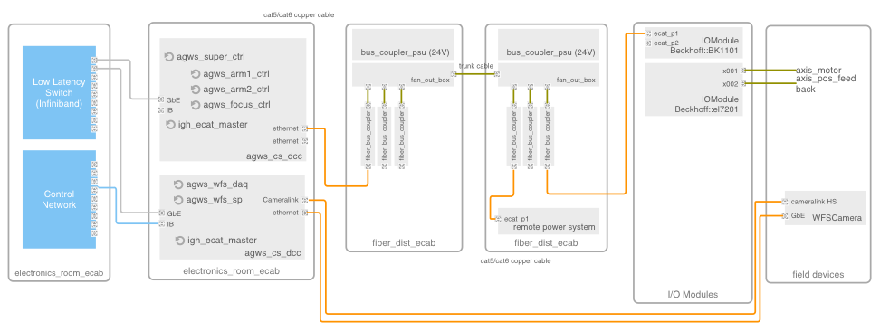
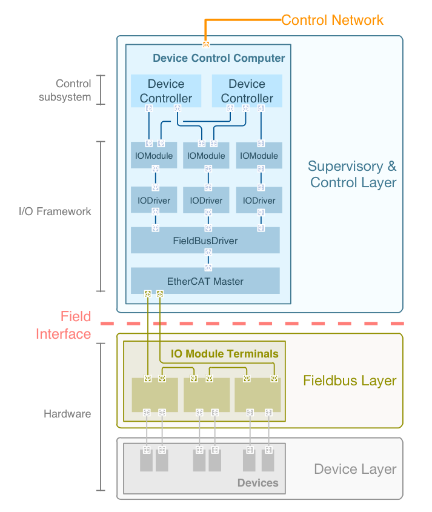

5. Frameworks¶
Frameworks provide a collection of reusable building blocks that solve recurrent problems in specialized domains (e.g., control systems, distributed services, data processing, hardware interfaces) and facilitate developing observatory applications. At the same time, they provide an isolation mechanism from underlying software layers. The use of these component frameworks is key to building a cost effective system [Youn10] and provides the following benefits:
- Improved internal reuse. The design of the component frameworks is based on set of recurrent design patterns [Gamm94] (e.g., Controller, Pipeline, Panel, Workflow, Sequence, Wrapper). A set of base classes implements these design patterns by means of composition/delegation or specialization.
- Improved consistency of designs and compliance with standards.
- Improved robustness. Components that are reused in multiple scenarios and different Subsystems are tested in more diverse conditions.
- Reduced maintenance cost, since knowing about fewer types of Components is required.
- Improved external reuse. Component frameworks implement wrappers for external software packages. Wrappers help reduce dependencies between subsystem implementation code and external software packages and minimize the propagation of changes through interfaces.
Frameworks have key distinguishing features compared to normal libraries:
- Inversion of control. In a framework, unlike libraries or normal user applications, the overall program’s flow of control is not dictated by the caller, but by the framework.
- Extensibility. A framework can be extended by the user usually by selective overriding or specialized by user code to provide specific functionality.
- Non-modifiable framework code. The framework code, in general, should not be modified, except regarding extensibility. Users can extend the framework, but cannot change its code.
This section presents the design of the GMT common frameworks, from the domain engineering process to identify common building blocks, to the design and intended usage of each individual framework.
5.1. Domain Engineering¶
5.1.1. Process¶
The Domain Engineering Process is one of the Software Reuse Processes as defined in ISO/IEC 12207 [ISO12207]. As stated in the standard, domain engineering is a reuse-based approach to defining the scope (i.e., domain definition), specifying the structure (i.e., domain architecture), and building the assets (e.g., requirements, designs, software code, documentation) for a class of systems, subsystems or applications.
The Reuse Asset Management Process and the Reuse Program Management Process complete the Software Reuses Processes. In the case of the GMT SWCS reuse assets are implemented as component frameworks and specification files that capture domain specific architectures and as a library of reusable components. All of them are available in the GMT Software Repository.
A domain defines a set of common requirements, terminology and functionality for any software program constructed to address a particular category of problems. In software engineering, domain analysis, or product line analysis, is the process of analyzing related software systems in a domain to find their common and variable parts. The GMT domain analysis process creates a set of domain object-oriented models using domain specific languages (DSL) [Fowl10].
Software developers can use these models as a basis for the implementation of the SWCS subsystems architectures and applications. This approach to domain analysis is also called model- driven engineering. Model-driven engineering (MDE)* is a software development methodology that focuses on creating and exploiting domain models (that is, abstract representation of the knowledge and activities that govern a particular application domain).
The MDE approach is meant to increase productivity by maximizing compatibility between systems (via reuse of standardized models), simplifying the process of design (via models of recurring design patterns in the application domain), and promoting communication between individuals and teams working on the system (via standardization of the terminology and the best practices used in the application domain).
The domain model is created in order to represent the vocabulary and key concepts of the problem domain. It also identifies the relationships among all the entities within the scope of the problem domain. In the SWCS the domain model is captured as a set of System Definition Files (SDF) written in a DSL. SDFs are text files that capture the specification of a Subsystem, Package or Component.
5.1.2. Quantitative Results¶
As described in the previous section, the software necessary to operate and control an observatory can be modeled and explained using a set of essential concepts that spans several domains of knowledge (e.g., observatory operation, device control, data processing, process sequencing, and hardware I/O). The results from the domain engineering process have been used to identify the categories and number of components in each SWCS subsystems. Where a large number of components of the same category has to be developed, a framework takes care of providing the implementation of a reference architecture and a set of common base components that are ready for use.
Table 18 Most Frequent Component Categories¶ Component Category Classes Instances Controller 225 6665 Pipeline 133 139 Server 75 75 Panel 298 302 The above table shows the distribution of Component classes found during the domain analysis process. The first column of the table names the most common components. The second column identifies the number of different classes found for each component. The classes define the number of different behaviors and interface specifications (e.g., m1_support_act_ctrl). The third column lists the number of individual component instances. This is relevant as the number of instances defines the number of different configurations for each class; enables one to estimate the amount of telemetry data generated; and gives a measurement of the effort necessary for assembly, integration and testing, as each instance has to go through those processes individually.
The following list summarizes the list of common frameworks, while the next sections describes them in more detail:
- Core Framework - Provides support for the development of a distribute component system with an interface to the observatory services that is independent of how these are implemented.
- Device Control Framework - Provides support for the development of real-time and non- real time device control applications.
- Persistence Framework - Provides support for the persistent storage of data structures and files.
- Data Processing Framework - Provides support for the development of data processing applications.
- Time Distribution Framework - Allows applications to obtain absolute time, set up timers and run synchronous tasks.
- User Interface Framework - Provides a set of common graphical components and widgets for the development of graphic components. The use of the framework ensures look and feel consistency between different subsystems.
- Device Driver Framework - Provides support for the development of hardware device drivers. The implementation of a driver that allows communicating with EtherCAT I/O modules is included in the framework.
Table 19 Overview of Analysis Domains¶ The above table shows the different domains identified in the GMT SWC domain analysis activity. The first column identifies the studied domain. The column Subsystem Packages identifies the software packages inside a subsystem that have components related to the domain. The column Domain Entities list the main domain entities used in the reference architecture of the domain model. Finally the column named Frameworks lists the frameworks that facilitate developing application components in the corresponding subsystem packages.
5.2. Framework Usage / Code Generation¶
GMT frameworks are intended to be extensible by specializing a set of base classes. A set of tools provides the capability to generate the skeleton of a component implementation from the specification of its interface. The Figure below (Component Skeleton Generation) shows the relation between generated skeletons and the GMT modeling framework.
The skeleton generation tools are available for every layer of the modeling framework, i.e. they can generate the skeleton of a model element from the metamodel or generate the skeleton of a runtime component from the model specification.

Fig. 42 Component Skeleton Generation. The GMT modeling framework is based in the OMG Meta Object Facility specification. The group on the left shows the main entities in the layered modeling architecture. A set of modular plugins allows one to generate skeletons and instances from layer to layer. The gen_skeleton function (1) allows the generation of the skeleton of a model element. The gen_instance function (2) allows the capability to generate the skeleton of an instance of a model element. Instances are created in the next model layer and they inherit the behavior of some of the framework base classes.
The table below describes three common framework use cases and the functionality provided by the frameworks involved.
Use Case
|
Framework
|
Base Classes
|
Function
|
|---|---|---|---|
Create a new
Controller
|
Core Framework
|
Base Component
|
Provides access to
observatory services
|
Device Control
Framework
|
BaseDeviceController
|
Provides usable control
building blocks
|
|
I/O Framework
|
IOModule, Device
|
Provides access to the
hardware
|
|
Create a new
Pipeline
|
Core Framework
|
BaseComponent
|
Provides access to the
observatory services
|
Data Processing
Framework
|
Pipeline, Filter,
Recipe
|
Defines a reference
architecture for data
processing pipelines
|
|
Persistence
Framework
|
ObjectStore,
FileStore
|
Provides persistence to
files and data structures
|
|
Create a new
Panel
|
Core Framework
|
BaseComponent
|
Provides access to
Observatory Services
|
UI Framework
|
Panel, Widget
|
Provides reusable
visualization components
|
5.3. Core Framework¶
The GMT SWCS architecture is based on a distributed component design. Distributed Components have been used in the design of different telescope projects like GTC, ALMA, ATST [CuHW13] and is considered by next generation projects [KaKD11]. In the past, this architecture has been implemented using object-oriented middleware, most commonly based on the OMG CORBA standard. Although CORBA provides several benefits, it also has some limitations, especially when trying to implement robust communication patterns other than Remote Procedure Calls (RPC). Still, a distributed component model is valid and provides high-level entities that can be mapped into object-oriented designs.
A Component is the basic building block in the SWCS architecture; it is a Metamodel class (MKlass). Instances of Components are used in the GMT SWCS Model to represent the concrete architecture of the system. Components are used to represent the main elements of a system and the relations between them. A Component is specified and defined by a set of Features in the following Table:
| Feature | Description
|
|---|---|
| Name | Unique component identifier. Allows unambiguous identification
of each individual component in the system (e.g.,
ngws_xpatrol_ctrl).
|
| Requirements | A list of requirements that can be associated with any type of
component, allowing the allocation and traceability of
requirements.
|
| Notes | Arbitrary notes can be added to any component to capture
information during the design process. This information can be
useful for communication between different developers, but is
not part of the specification of the component.
|
| State Machine | A state machine represents the operational state of a component.
The Component state machine includes states to address the
distributed nature of the component and its life cycle
management.
|
| Properties | Properties capture the persistent state of a component between
different execution runs. The properties of a component are
grouped into Component Configurations. Several configuration
versions can be defined for a given component (e.g., diagnosis,
engineering) and can be applied as a unit.
|
| State Variables | State variables allow continuous or episodic sampling of the
phisical state of the Component. State variables are transported
as a stream of time-stamped data. State variables are the source
of the telemetry service. Telemetry communication is kept
separated from control data.
|
| Alarms | Alarms represent fault conditions that may affect the nominal
behavior of the Component. The occurrence of an alarm is always
reported.
|
| Input Ports | Data inputs use communication ports that support low
latency, synchronous and asynchronous control data flow. Data
inputs and data outputs are specified with the data types and
the maximum rate that they support. Data inputs and data output
are linked with Connectors. Different operation modes may
require different Quality of Service (QoS) between the same
ports. Connectors include the QoS specification corresponding
with connection configuration and the fault management strategy.
|
| Output Ports | Data outputs are defined analogously to Data input features.
|
| Elements | Aggregated components in the case of a composite Component.
|
| Files | Auxiliary information that can be associated to complete the
description of the Component.
|
The semantics of the Component Features (see example below for the Property feature) are specified in Model Definition Files (MDF). MDFs use the same syntax as the SDFs, but their intent is to define the concrete semantics of model elements. The Features of a Component define the component interface as they express the external view of the Component. See Subsystem Specification and Modeling for a description of MDFs and SDFs.
One of the essential aspects of components is that it provides a way to address cross-cutting concerns. The Observatory Services is a domain that interfaces multiple domains: Observatory Operations, Instrument Control System, Telescope Control System (see Figure). There, the BaseComponent class addresses cross-cutting concerns by providing features to interface Service Adapters. When a new component extends the BaseComponent class it gains access to all the observatory services through a small set of inherited methods.
MKlass "Property",
extends: ["Port"]
abstract: false
desc: "Properties are the basic unit for component configuration"
features:
units:
kind: "reference"
lower: -1
upper: 1
type: "UnitType"
desc: "Units"
type:
kind: "attribute"
lower: 1
upper: 1
type: "BaseDataType"
desc: "Type of the Property"
min:
kind: "attribute"
lower: -1
upper: 1
type: "ValueType"
desc: "Minimum value of the property"
max:
kind: "attribute"
lower: -1
upper: 1
type: "ValueType"
kind: "Maximum value of the property"
default:
kind: "attribute"
lower: 1
upper: 1
type: "ValueType"
desc: "Default value of the property"
5.3.1. Distributed Communication¶
The Core Framework supports different communication patterns, connection ports and transports. The following two tables provide an overview.
Table 22 Communication Pattern Overview¶ Communication Pattern Request-Reply Publish-Subscribe Pipeline Exclusive Pair GMT distributed component features are accessible through the control network. The table below shows how different features require different communication patterns and fault management or optimization strategies. In the Table below, High Water Mark (HWM) is the size of he incoming or outgoing buffer.
Table 23 Communication Pattern: Fault Management & Optimization Strategies¶ GMT distributed components support two operation modes, standalone and integrated:
- In integrated mode, components will try to connect with the observatory services. If the services are not available the component will stop its startup sequence. This is the default operation mode when components are integrated and deployed in the observatory or integration simulator.
- In standalone mode, components do not try to connect to the observatory services (e.g., log and alarms send their messages to the console). This operation mode is intended to be used during initial component development.
5.3.2. Framework Implementation¶
The Core Framework hides the implementation details, like the middleware software used or the transport protocol. The implementation of the framework is based on the ZeroMQ middleware. ZeroMQ does not include a serialization mechanism; this provides the flexibility to use different serialization formats depending on the use case (e.g., ProtocolBuffers, MessagePack, raw bytes, JSON, hdf5). The Section on Platform provides an overview of the ZeroMQ middleware. The table below describes several communication patterns implemented by means of several socket types, based on ZeroMQ Socket Types.
Table 24 Communication Pattern Implementation: Socket Types¶ ZeroMQ also provides various transports like in-process, inter-process, TCP and multicast and has a small memory footprint, making it a good candidate to be used as a concurrency framework.
The Table below gives an overview of available communication transports.
Table 25 Available Communication Transports¶ Transport Description tcp Unicast transport using TCP ipc Local inter-process communication transport inproc Local in-process (inter-thread) communication transport pgm, epgm Reliable multicast transport using PGM
5.4. Device Control Framework¶
Device control subsystems (e.g., primary mirror control system, ASM control system) command mechanical degrees of freedom or read optical and other sensors. The Section on TCS Subsystems presents a list of the most significant device control subsystems in the TCS. Their degrees of freedom are represented by a set of state variables, which define the observed and desired state of the system and are often updated in an arrangement of nested control loops. These control loops may be implemented with different strategies:
- The complete control loop is implemented in an embedded smart controller (e.g., a COTS motion drive that implements the EtherCAT CoE DS-402 profile). The embedded controller is supervised by a software component that allows the integration with the rest of the observatory services. This is the recommended implementation when a system under control has a single degree of freedom and single or dual feedback (the Rotation or Pupil stage of the LTWS is an example of this arrangement).
- The system under control requires multiple actuators and/or feedback sensors, even if it has a single degree of freedom. In this case, part of the control loop runs inside a smart controller like in the previous case, but some part of the loop needs to runs in a high level controller – given that in this scenario it is difficult to find a commercial standardized product that provides the adequate number of inputs, outputs and capability of closing the loops using them (e.g., mount control system).
- Optical degrees of freedom are often grouped in large interdependent sets. This scenario requires that the controller estimate the current state and calculate the desired state in complex computations with very diverse ranges of update regimes. These calculations are very specific to the optical system under control, so no standard solutions or commercial products exist. In this case, the development of specific software run on high performance computing hardware may be necessary (e.g., wavefront control).

Fig. 43 General Scheme of a Control Loop Implementation
Although the principal function of a Device Control Subsystem is the control of hardware devices, an efficient and robust operation requires the development of other important functions:
- Calibration - In many subsystems, calibration software is required to produce error maps or look-up tables (LUT) that allow the control system to perform with the necessary accuracy.
- Diagnosis - Some of the GMT hardware subsystems are quite complex. Specific software components are often required to verify the behavior of the system or to troubleshoot it in case of incorrect behavior.
- Safety - There are some scenarios where a hardware device could be damaged due to incorrect operation. The Interlock and Safety System (ISS) is ultimately responsible to prevent any damage to equipment or injury to people by the telescope. The ISS “kicks-in” often in a dramatic way. Safety control components provide safe guards to preempt the engagement of the ISS.
- Supervision - Often the operation of a subsystem involves coordinating several subordinate components. It is then the TCS responsibility to guarantee that subordinate components are in the correct state and that the performance degrades gracefully in off-nominal scenarios. In addition to managing the configuration, and startup/shutdown of the control subsystems and hardware devices, supervisory components also implement kinematic transformations or anti-collision protection strategies when the system under control requires it.
5.4.1. Controller State Machine¶
A state machine represents the operational state of a Component. A set of states addresses the distributed nature of the component and its life cycle management. The Figure below shows the Controller state machine. Only the description of each state is shown. Details about entry actions, transitions and activities are omitted in this diagram.

Fig. 44 Controller State Machine
The table below provides the specification of the Controller state machine. The specification defines what actions to implement in every state or transition, however in some of the states each Controller implements its own specific logic.
Table 26 Component State Machine Specification¶ State INITIAL TERMINAL PREVIOUS STATE OFF STARTING ON INITIALIZING IDLE RUNNING SHUTTING DOWN HALTING FAULT RESETTING DISABLED Controllers that interface with hardware support specialized operation modes, on-line and simulated:
- In on-line mode, controllers try to detect and setup the hardware elements connected to them during startup. If some of the required hardware devices are not available the controller will transition to fault mode. On-line is the default mode when the system is deployed for operation at the observatory.
- In simulation mode, controllers will setup the I/O framework in simulation mode. Communication messages with the hardware will be logged, but will not be sent to the hardware devices. Hardware devices will not be powered up during the startup sequence. This mode is intended to be use during development when the hardware is not yet available or is available partially. It also enables controller debugging once the hardware is integrated.
5.4.2. Supervisors¶
In addition to direct control of Devices, control subsystems require the implementation of supervisory functions when several Devices have to be operated in a coordinated manner. Supervisors also provide the implementation of the high-level interface to a subsystem. A high- level interface reduces the coupling between subsystems, encapsulates the subsystem implementation details and minimizes the propagation of implementation changes. There could be exceptions due to performance issues (e.g., a component need direct access to the low-latency network). Depending on the specifics of every subsystem, Supervisors can provide the following functions:
- Subsystem integrity (e.g., collision avoidance)
- Subsystem component configuration (e.g., components are configured in the right sequence and with the right configuration properties, LUTs)
- Subsystem robustness (e.g., behavior in presence of no nominal conditions, fault management and tolerance)
- Subsystem life-cycle (e.g., startup and shutdown)
- Subsystem embedded diagnosis
- Subsystem modal transition (for subsystems that have different modes of operation)
- Subsystem IO health
5.4.3. Device Controller Library¶
Based on the analysis of the degrees of freedom of the telescope (see TCS degrees of freedom), a set of common device control cases have been identified. These cases are based on the motion profiles defined in the IEC 61800-7-201 standard [IEC61800-7-201]. The framework provides a set of Components that implement those cases. The Figure below shows the Controller class hierarchy.

Fig. 45 Device Controller Class Hierarchy
5.4.4. Device Control Subsystem Deployment¶
During the design process, the functional description of the Controller features is refined and a hardware deployment model is created as part of the electronic design. The hardware deployment model includes the definition of processing resources and the Input/Output modules that interface with the hardware devices. All this information is captured in the domain model SDFs and used to generate code skeletons and configurations used by the implementation.
The mapping between process image and controller features is completely independent of the protocol used to access the hardware. IOModule adapters provide independence from the specific fieldbus (the Section on I/O Framework describes how the I/O Framework supports this process). The code-block below presents an example of the deployment specification of a Device Control Subsystem:
Host "agws_dcc", desc: "AGWS Control System Device Control Computer" location: "gmt.er_ecab_03" buses: ecat_01: update_rate: 2000 io_modules: E11010: desc: "Bus Head Coupler" location: gmt.gir_ecab_01 ports: X001: gmt.dccs.agws_dcc.ether_01 X002: gmt.agws_dcc.ecat.el7301.X001 Subsystem "agws_cs", io_routing: port: gmt.agws_dcc.ether_01 port: gmt.agws_dcc.ecat.EL1011.X001Fig. 46 Device Control Subsystem Deployment. Controllers (e.g., agws_arm1_ctrl) are deployed in Device Control Computers (agws_cs_dcc) in the control room electronic cabinets.
5.5. Persistence Framework¶
The Persistence Framework (PF) provides support for the storage of data structures and files. It acts as a data access layer between the components and the databases and file systems, and provides a mapping between application data structures and the database.
The GMT uses and produces different types of data:
- Time series data that are streamed by the telemetry, alarm and log services. These streams of data have to be stored with efficient use of space and adequate performance. These data collections need to be queried in order to support analysis.
- Science instruments and WFS produce detector frames.
- Several thousands of components are deployed in the runtime system; each one has its own configuration parameters. This data has to be accessed during the startup of the system and also during normal operation.
- Observing programs, calibration pipeline parameters and observing sequences are stored and accessed by different applications during the lifecycle of an observation.
The table below shows the data persistence strategies:
Data Type
|
Storage Strategy
|
Persistence
|
Data format
|
|---|---|---|---|
Science and WFS
frames
|
Files +
metadata object store
|
Permanent/
Time partition
|
FITS + MongoDB
|
Telemetry streams
|
Files +
metadata object store
|
Time partition
|
HDF5/BSON/MessagePack +
MongoDB
|
Alarm, Log streams
|
Object store
|
Time partition
|
NoSQL DB (MongoDB)
|
Configuration
|
Object store
|
Permanent
|
NoSQL DB (MongoDB)
|
Observing Programs
|
Object store
|
Permanent
|
NoSQL DB (MongoDB)
|
Observing Sequences
|
Object store
|
Permanent
|
NoSQL DB (MongoDB)
|
Recipe Parameters
|
Object store
|
Permanent
|
NoSQL DB (MongoDB)
|
The design of the Persistence Framework is based on the use of a High Performance File System like Lustre in combination with a NoSQL database to store component configurations and file metadata. High Performance File System and NoSQL database technology is in constant evolution in order to address BigData and large-scale web applications. Although the outcome of some prototypes using the MongoDB database to assess its feasibility as a metadata store has been very encouraging, it is advisable to delay the adoption of a concrete technology until the detailed design phase to take advantage of further technology developments. MongoDB is been used meanwhile to develop the Application Programming Interface of the Persistence Framework.
5.6. Data Processing Framework¶
The Data Processing Framework (DPF) provides support for the development of data processing pipelines. Specific examples of data processing pipelines include: statistics (image noise and S/N estimation, sky brightness, seeing estimation, number of sources), astrometry (computing WCS for imaging detectors), image matching (coordinate transformation, image registration), data filtering, image cube construction, data extraction (e.g., IFS wavelength slices), image manipulation (masking, interpolation), image analysis, PSF creation (AO PSF simulation), spectral analysis, photometric calibration, spectral reduction, image reduction, image mosaic creation, etc.
The framework design is based on the Pipes and Filter design pattern. Pipelines act as wrappers of existing or newly developed data reduction systems and provide a thin unified interface to the observatory operations software. The goal of this approach is to reach a balance between the uniform operation and maintenance of the observatory and the cost of developing new pipelines that are successors of existing ones.
The table below provides a definition of the main DPF components:
Component Name
|
Description
|
|---|---|
Pipeline
|
Collection of Filters and data processing Recipes
|
Filter
|
Elementary processing unit of a data processing pipeline (e.g.,
bias or dark filter in a data reduction pipeline). Each Filter
has a set of data inputs and outputs and a set of parameters
that tailor its behavior. Data inputs and outputs can be streams
or files and often capture an intermediate processing step. The
Core Framework provides different communication transports (e.g.
inproc, ipc, tcp) for flexible and efficient I/O management and
deployment.
|
Recipe
|
Defines a concrete sequence of connected Filters. Each Recipe
has a set of data inputs, data outputs, parameters and
validation rules (e.g., an instrument data processing pipeline
may define a Recipe for each observing mode that requires a
different data reduction strategy). The execution of Recipes
will be often triggered during the execution of an observing
sequence.
|
The Figure below shows the DPF in the context of the definition of an observation.
Fig. 47 Data Processing Framework Components
Each Pipeline is specified by a set of SDFs that defines the interface of the Filters and Recipes components making up a pipeline. This interface enables the operation and integration of all the data pipelines in a uniform way, and provides the following capabilities:
- Execution of the corresponding Recipes when the input and calibration data are available
- Instantiation of a quick-look display when requested by the operator
- Storage of by-products of the pipeline consistently throughout the observatory.
The framework includes tools that generate a set of Python interface skeletons that then act as wrappers of existing or new data pipelines. Skeletons have to be completed by the pipeline developer.
Multiple implementations of data processing tools and algorithms are available; some of them are summarized here:
- Data Analysis Facilities - These are fully self-contained (e.g., PyRAF, IRAF) packages that come with tools for image display, data manipulation, analysis, and scripting, with which many observers are familiar. These packages also facilitate the development of high-level tools for instrument data reduction and quick-look extraction or analysis.
- Numerical Libraries: Numerical libraries (e.g., LAPACK, ATLAS, FFTW, GSL, SciPy) will be the basis for developing software that requires high-performance numerical computations.
- Data Extraction and Modeling - Data extraction and modeling tools (e.g., PSFEx, SExtractor, GALFIT) are useful for exposure time calculations during proposal preparation. They are also used during runtime operations for producing seeing statistics, data summary, astrometry, and to aid the monitoring of environmental conditions and data quality.
- Positional Astronomy and Coordinate Transformation - These tools (e.g., SLALIB, SCAMP, WCSTools) are commonly used for relating sky coordinates and detector coordinates in images and for telescope pointing, for calculating spherical geometry, and for aligning imaging or spectroscopic data.
- Data Container - Data containers transform a data type into another type (e.g., CFITSIO), or repackage data to be compliant with a standard format (e.g., Virtual Observatory).
- Data Visualization - These tools (e.g., SAOImage JS9, WebGL) facilitate visualization of operational data, such as line or scatter plots; reduced, imaging, spectroscopy, or integral- field, data; exposure time calculation, and runtime observing displays.
- Telescope Pointing Kernel and Pointing Analysis - TCSpk and TPoint will be the primary tools used for computing telescope pointing models, generating pointing demands, and performing pointing analysis to remove pointing errors due to flexure, alignment errors, or mechanical imperfections.
The Software and Controls Handbook defines a set of requirements (e.g., operating system compatibility, hardware acceleration) that have to be met by the data reduction packages and libraries used in the implementation of the data processing pipelines.
5.7. Time Distribution Framework¶
The Precision Time Protocol is a method by which a cluster of computers, communicating over a Local Area Network, can keep their local clock synchronized to a better time source, commonly referred to as a Master Clock.
The protocol is defined by the IEEE 1588 standard, and enables heterogeneous systems that include clocks of various inherent precision, resolution, and stability to synchronize to a grandmaster clock. The protocol supports system-wide synchronization accuracy in the sub-microsecond range requiring minimal network and local clock computing resources.
Different implementations are available from open-source projects and commercial vendors. Prototyping activities have shown PTP to be a suitable time distribution framework for GMT, capable of microseconds synchronization. Different vendors offer cost effective IEEE 1588 Grandmaster Clock with GPS (Global Positioning System) reference that supports the latest PTP version 2 protocol. Additional IEEE 1588 enabled Ethernet switches can be deployed for improved performances.
Similarly to NTP, deployment is straightforward and just requires a daemon to be running,. The daemon adjusts the system-wide real-time clock of the computer, and is thus transparent to users or applications using standard calls.
5.8. User Interface Framework¶
The User Interface Framework (UIF) provides a set of common reusable Widgets (user interface graphic elements) and Panels. Widgets and Panels are the building blocks used to construct the GMT user interfaces. The Table below provides a list of some of these components, based on d3.js.
Widget Name
|
Description
|
|---|---|
Scalar
|
Visualizes the instant numeric value of a quantity.
|
Line/Area chart
|
Visualizes the value of a quantity or set of quantities versus
another.
|
Time chart
|
Visualizes and updates the value of a quantity or set of
quantities versus time.
|
Box plot
|
Summarizes a quantitative distribution with five standard
statistics: The smallest value, lower quartile, median , upper
quartile, and largest value.
|
Bullet chart
|
Compares a given quantitative measure against qualitative
ranges (e.g., linear position and limit ranges).
|
Calendar view
|
Visualizes values as colored cells per day.
|
Treemap
|
Recursively subdivides area into rectangles, the area of any
node in the tree corresponds to its value (e.g., visualization
of subsystem and components alarm states).
|
Chord diagram
|
Shows directed relationships among a group of entities.
|
Matrix diagram
|
Visualizes an NxN relationship (e.g., active component port
connections in a wavefront control observing mode).
|
Crossfilter
|
Supports exploration of large multivariable datasets.
|
WFS RT display
|
Displays WFS pixels, slopes in realtime (24fps).
|
Image viewer
|
Supports the visualization of FITS data.
|
As in previous cases the use of a framework facilities a consistent design and documentation, improves system predictability as all widgets operate consistently in different scenarios, and reduces development costs.
In addition to reusable components the framework defines some user interface guidelines:
Shape, size and color attributes are used only when they carry specific semantics [Tuft01].
The user interface style is flat with no bevels or tridimensional effects.
No decoration shall be used if it does not convey any semantics.
The user interface shall support the exploration of available options in a clear, unambiguous way.
In any operational context, information shall be readily visible and available without a user having to hunt around, such as by navigating series of pull-down menus or layers.
Users normally perform tasks following workflows, therefore visual information shall support the process of decision making related to the task at any given moment.
Information shall be displayed using the appropriate visualization for the task context.
The layout of the Operations interface shall be fixed for the most part. This guarantees that the information relevant to the operation of the system is always visible. Although part of the user interface shall be flexible to adapt to the task at hand, the fixed part of the user interface enables different users of the system to adopt a common language and vocabulary.
All the remote operations centers shall have a consistent layout. This facilitates support and troubleshooting tasks.
User interface components shall be arranged according to a logical sequence that enables one to intuit where, on a screen, an element would be located. Two main criteria shall be used, physical distribution and temporal distribution:
Physical distribution – Widgets that represent the state of a system shall be arranged according to the geometric organization of the physical elements, e.g., in the main status screens all user interface components are arranged from left to right following the location of the systems from the outside to the inside.
Temporal distribution – All the widgets that support the operation workflows of the observatory are arranged following the same distribution as a Kanban diagram. Section 10.3.3.4 (Operational User Interfaces, TBA) shows the main operation displays, which follow this principle.
The Figure below shows an example of the design of a widget according to these principles. A detailed description of all the widgets is out of the scope of this document.

Fig. 48 Scalar Widget Design
5.9. I/O Framework¶
The I/O Framework (IOF) provides the infrastructure to develop observatory compliant Device Controllers based on EtherCAT technology. The Section on Field Device Interface Technology provides a more detailed description of EtherCAT. The IOF provides the following capabilities:
- Tools to assist developers with the definition of their application’s I/O.
- Templates that can be reused or extended based on reference definitions and implementations.
- Standard environment to build, test and deploy systems.
- Abstraction layers to keep underlying 3rd party software packages transparent, and hide the complexity and low-level implementation details.
- Tools to assist with prototyping, testing, debugging and validation during all the steps of the development process.
- Scripting capabilities and a command line interface for rapid development.
5.9.1. Terminology¶
A Device is a real world, physical entity representing the system under control. A device controller is a standard software component (see the following section). The device controller relays input and output signals to control hardware devices. An IOModule is a hardware independent representation of an I/O module terminal whereas the IOModuleDriver provides the hardware dependent implementation, e.g., due to vendor specific electronics implementation. An IO module terminal is a real-world electronics component built into a hardware device assembly.
Fig. 49 Framework Overview
While particular hardware assemblies may rely on highly specialized controllers (e.g., cameras, deformable mirrors) a substantial number of hardware assemblies can be identified in the telescope design that rely on a limited set of fundamental generic building blocks. These primitive I/O modules can be grouped into generic families:
- Digital Input and Output modules
- Analog Input and Output modules
- Position Measurement modules
- Motion control modules
- Communication modules, e.g., Serial or Ethernet – often used to bridge more integrated systems
More specialized modules, e.g., Pulse Width signal output, Thermocouple input, etc., extend from this general classification.
The I/O Framework is decomposed into layers. A bootstrap layer handles configuration and setup of the environment using SDFs. A runtime layer provides the hooks between the bootstrapped environment and the application development environment. The framework is logically structured into a hardware abstract layer e.g., an IOModule instance of digital output family, and a hardware dependent layer, e.g., a vendor specific unit. Although the scope of the currently envisioned framework is really targeted at EtherCAT, other technology can be interfaced using the same architecture.
5.9.2. Fieldbus Communication¶
EtherCAT Master
The principles of EtherCAT fieldbus communication are presented in more details in Section on Field Device Interface Technology. The EtherCAT technology group (ETG) provides an ANSI-C reference implementation for EtherCAT master. The GMT I/O Framework relies on third party software to provide this communication layer. Different commercial and open-source implementations have been evaluated [Bec12a] to find which solution better suited the needs of GMT, and to understand commonalties between different solutions.
The current baseline uses the EtherCAT Master (ECM) from IgH, an open source package from the IgH EtherLab tool suite. The IgH EtherCAT master is implemented as a Linux kernel module and provides an API to configure and operate the EtherCAT fieldbus. The API is available in user space and kernel space for development.
The IgH implementation also provides a generic network driver that will function independently of the computer network hardware, using the Linux kernel network stack. This approach proves very flexible but suitable for rates typically less than 1 kHz. Specialized drivers are also provided for a couple of popular network interface (Intel e100/e1000, Broadcom). Those bypass the network stack and allow faster and more deterministic responses, up to 5-10 kHz cycle time from our lab evaluation.
ECM Driver
The IgH EtherCAT master handles all aspects of the communication protocol and state transitions. Beyond that, it does not impose any particular philosophy or mode of operation. The GMT I/O Framework builds on top of the EtherCAT master to provide isolation from third-party specific implementations and a common pattern reused by all the GMT applications.
The ECM Driver is the main component of the I/O framework; it provides the following capabilities:
- Interfaces with the EtherCAT master implementation and exposes a predefined operation pattern.
- Exposes status information via the sysfs file system.
- Exposes an API to configure the application process maps and I/O modules. The interface is available from both user-space using ioctl and kernel space.
- Exposes a top level r/w debug level flag accessible through procfs
- Holds the field bus configuration in terms of I/O module terminals topology and configuration.
The EtherCAT fieldbus communication follows a master/slaves paradigm. The fieldbus is daisy chained and the protocol uses a simple addressing mechanism based on each slave (i.e., I/O module terminal) position on the bus. The ECM Driver component holds a list of IOModules to represent this arrangement. IOModules are described in next section.
5.9.3. I/O Module Terminals¶
EtherCAT Slaves
EtherCAT Slave Controllers (ESC) provide an EtherCAT Slave Information file (ESI), an I/O module terminal description document in XML format. Information about the module functionality and settings is provided by the ESI. Slave specific information (manufacturer, product information, profile, object, process data, sync or non-sync, sync manager setting) is registered to the ESI file in XML format.
ESI files are used by the I/O Framework to define the application network information (ENI) e.g., process data structures and initialization commands. The ESI file is defined by the ETG.2000 EtherCAT Slave Information specification. The structure of an ESI file is defined in the EtherCATInfo.xsd XML schema document, available from ETG.2001 EtherCAT Slave Information annotations.
ECG I/O Modules
An IOModule is a base component from the I/O framework used to represent an EtherCAT slave controller. I/O Module terminals are fully resolved by their vendor identifier, product code, and revision number. The ETG group assigns EtherCAT technology partners and vendors unique vendor identifiers. The I/O framework provides tools to automatically generate IOModule components from the slaves ESI definition. The components follow a naming convention for convenience.
IOModules are registered to the ECM Driver using this naming convention and their location on the fieldbus. They expose Process Data Object (PDO) as block of memory. The I/O framework generates a mapping of the PDO map to different target programing languages, currently C/C++ and Python.
The following code blocks below together show an example of an I/O Module PDO Mapping in C/C++ and Python:
struct bh_el7041_00130000_sm3 { uint8_t x1a01_6000_01 :1; // (ro) ENC Status - Status__Latch C valid uint8_t x1a01_6000_02 :1; // (ro) ENC Status - Status__Latch extern valid uint8_t x1a01_6000_03 :1; // (ro) ENC Status - Status__Set counter done uint8_t x1a01_6000_04 :1; // (ro) ENC Status - Status__Counter underflow uint8_t x1a01_6000_05 :1; // (ro) ENC Status - Status__Counter overflow uint8_t :2; uint8_t x1a01_6000_08 :1; // (ro) ENC Status - Status__Extrapolation stall uint8_t x1a01_6000_09 :1; // (ro) ENC Status - Status__Status of input A ... uint32_t x1a06_6020_11; // (ro) POS Status - Actual position int16_t x1a06_6020_21; // (ro) POS Status - Actual velocity uint32_t x1a06_6020_22; // (ro) POS Status - Actual drive time } __attribute__ ((packed));class bh_el7041_00130000_sm3 (Structure) : _pack_ = 1 _fields_ = [ ('x1a01_6000_01', c_uint8, 1), # (ro) ENC Status - Status__Latch C valid ('x1a01_6000_02', c_uint8, 1), # (ro) ENC Status - Status__Latch extern valid ('x1a01_6000_03', c_uint8, 1), # (ro) ENC Status - Status__Set counter done ('x1a01_6000_04', c_uint8, 1), # (ro) ENC Status - Status__Counter underflow ('x1a01_6000_05', c_uint8, 1), # (ro) ENC Status - Status__Counter overflow ('_________pad0', c_uint8, 2), ('x1a01_6000_08', c_uint8, 1), # (ro) ENC Status - Status__Extrapolation stall ('x1a01_6000_09', c_uint8, 1), # (ro) ENC Status - Status__Status of input A ... ('x1a06_6020_11', c_uint32), # (ro) POS Status - Actual position ('x1a06_6020_21', c_int16), # (ro) POS Status - Actual velocity ('x1a06_6020_22', c_uint32), # (ro) POS Status - Actual drive time ]Once registered to the ECM Driver, each IOModule instance exposes status information and its PDO mapping via the sysfs file system.
The Table below shows an ECG I/O Module sysfs (EL7041 at position 10):
Table 30 ECG I/O Module sysfs (EL7041 at position 10)¶
5.9.4. Process Image¶
EtherCAT Frames
The ECM Driver handles the registration of all the IOModules and their mapping into EtherCAT frames. EtherCAT frames are cyclically sent and received by the master at the base frame rate defined by a “freq” parameter. The I/O framework allows mapping of certain regions of the I/O modules at multiple of the base rate, i.e., those PDO only update every n-th frames of the nominal rate. The complete process image contained in the EtherCAT frame can be thus split into separate logical regions.ECM Domains
An ECM Domain is a base component of the I/O framework used to represent a sub region of an EtherCAT frame updating at a given rate. The rate is a fraction of the nominal rate and currently supports power of two values, i.e., x1, x2, x4, ... x128. During system initialization, ECM Domains are initially defined and IOModules register their PDO mapping into those domains.
In its simplest form, an application may simply consist of a unique domain, which will be used by all the modules and contains the complete process image that updates at the nominal (x1) base rate. Once registered to the ECG Master, each ECG Domain instance exposes status information and its fraction of the process image via the sysfs file system.
The Table below shows an example of the Process Map sysfs:
Table 31 Process Map sysfs¶ sysfs Type Description pmap/dom00/data bytes[] Domain process image memory map (mmap) pmap/dom00/domain_size int Number of bytes in data pmap/dom00/wc_state int Working counter state (0: complete, 1: incomplete) pmap/dom00/working_counter int Working counter value
5.9.5. Bootstrap Process¶
The framework provides all the capability to configure and bootstrap a new application. The process can be done programmatically at different level: kernel, user-space C/C++, python – in decreasing order of complexity.
The framework provides an API to configure Service Data Objects (SDO) and Distributed Clock (DC) settings for each IO Module. Details are not presented here but essentially consist of straightforward ioctl binding as listed in the previous section. The resulting API provides seamless integration with the GMT modeling framework and fosters the automatic generation of bootstrap components based on model application definitions. Once bootstrapped, the I/O framework cyclically runs the complete EtherCAT stack.
The code (Python) below shows an example of an Application Bootstrap:
from gmt import ecx from gmt.ecx import nth, acc # acquire master m = ecx.master(0) # register domains dinp = m.domain_register(0, nth.x1, acc.ro) dout = m.domain_register(1, nth.x1, acc.wo) # register devices m.device_register('bh_ek1100_00110000', 0) m.device_register('bh_el2202_00100000', 1) m.device_register('km_akd_00000002', 2, inp = dinp, out=dout) # activate @ 1 kHz m.activate(1000)
5.9.6. Runtime Components¶
The I/O framework provides additional runtime components to interface with the bootstrapped application.
ECM Fieldbus
The ECM Fieldbus component is a front end to the kernel spaces components. In particular, ECM:
- Runs the EtherCAT stack cyclically, taking over from the free-wheeling ECM Driver.
- Checks health of the different kernel components, e.g., ECM Driver link up, slaves responding, I/OModule’s al_state, ECG domain’s working_counter, etc. and raises appropriate alarms.
- Arbitrates access to the process maps in between cycle.
ECM I/O Drivers
ECM I/O Drivers provide reference implementations for the control of their I/O Modules. The I/O drivers interact with the ECM Driver to access the I/O module process maps in a synchronized way. I/O Drivers can be very simple, e.g., a digital output driver that only needs to set a bit in the I/O module process map, or more involved, e.g., implement CiA402 motion profile state machine.
The ECG I/O Drivers essentially allow hiding the low level details of control, and enforcing data synchronization when accessing the fieldbus.
BaseDeviceController
The BaseDeviceController component is part of the device_control_framework and provides a base implementation for all GMT components implementing a Device Controller. The components provide:
- An environment holding the IOModules, IODrivers and Fieldbus instances, and access to those components.
- Adapters to Observatory Services, e.g., logging, telemetry, alarms, etc..
- Adapters to middleware to expose commands, process data, etc. to the rest of the control system.
The framework provides an API for developers to build their own application, and python binding for rapid prototyping, testing, and validation.
The code (Python) below shows an example of an Application Runtime:
from gmt import ecx # load application app = ecx.load('demo') # lookup component km = app.lkup('demo://dev/km_akd') # device control def when_done(status): pass km.init() km.datum() km.move(42, when_done)